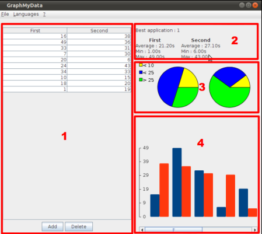

Here is the summary of the content of the help of GraphMyData:

The user interface
GraphMyData is a tool to show different statistics between different applications when doing a User Interface Evaluation by a person who does not know an application. The row data entered at the left only means the time (eg. in seconds or any unit that you want to use) needed to perform an action in an application. This application handle onlycomparison of two applications.
There can be a different amount of measures that can be done, eg. time needed to find the help, time needed to find the way of printing, etc.
The application then show in real-time different statistics about the given results
You can find more information in the sections below.
Todo Wicht blabla...
Todo Butty blabla....
Todo me blabla